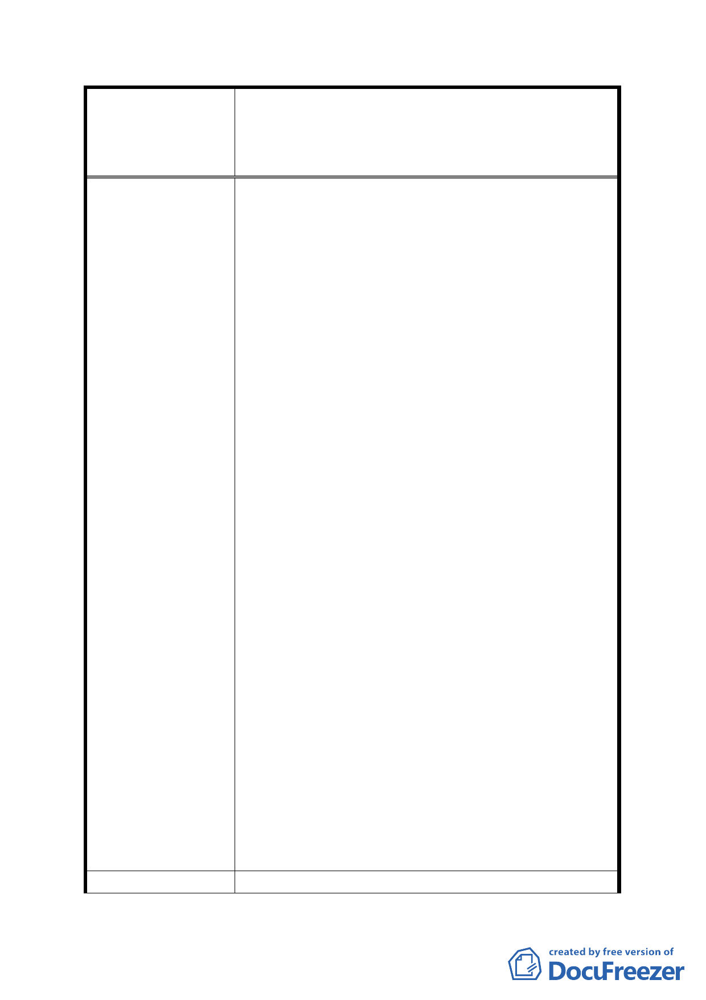

案名
發展局回應意見
擬定臺北市內湖區蘆洲里附近工業區細部計畫暨變
更第 2 種工業區為科技工業區 B 區(特)、科技工業
區 B 區、道路用地、護坡用地及變更工業區(供輕工
業使用)為科技工業區 A 區(特)計畫案
環境，廠商進駐、增進就業、創造產值之目的。
2. 因參與重劃之土地可分回原面積之 55%土地，使
用強度最強的一樓土地減少了 45%，與非重劃但
可享有都更獎勵之土地之一樓使用面積落差太
大，應該予以容積補償，以增加參與重劃之意願。
3. 因本地區仳鄰垃圾山及垃圾焚化爐，且為垃圾車
經過唯一道路，致使未能與內科及南軟園區同步
開發，因而窳陋髒亂至今。希望各委員們能體察
實況，酌於提高開發時程之容積獎勵值，鼓勵開
發腳步加快，對臺北市都市市容及經濟發展均有
莫大助益。
4. 因本重劃區內有近 160 戶之五樓住宅，各戶土地
持分少，若改建之容積不足，未來安置將是推動
土地重劃之最大阻力。
5. 本市非重劃區之都更獎勵均值約為 35%，而本重
劃區內只有 28.32%，且原有一樓土地又少了
45%，顯有不公之處。且可領取拆遷補償費有些
是已取得使照之房屋（事實上是損失很重），且
有些補償費是補償給佔有戶，並非補償給原地
主。若持可獲得重劃補償金之原因而降低都更獎
勵值(小於 35%)，對本重劃區之地主顯有不公。
6. 本重劃區地籍產權複雜，小地主眾多，未來完成
重劃後，須透過土地整合完成(約 1 至 3 年)加上
都市更新審查通過(約 1 至 2 年)，才能進入建照
執照審查取得建照執照，耗時冗長，因此建請修
改為須於重劃完成之日起 5 年內(原訂 3 年)取得
建照執照，否則本時程獎勵予以取消，為合理之
開發時程獎勵年限。
以上所陳均是事實，希望委員會各位委員能體察本
重劃區內多數小地主的心聲，酌予提高開發時程的
獎勵值，促使本地區能早日開發跟上時代腳步，不
勝感激。
1. 有關陳情意見擬修正開發時程獎勵為 20％1 節，
- 40 -